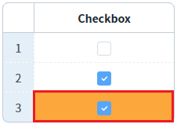

GridView의 바디 컬럼의 'inputType'이 'checkbox'로 설정되었을 때, GridView의 'getCheckedIndex' 메소드를 사용하여 체크된 행의 인덱스를 배열로 반환받는 예제입니다.
체크된 행의 인덱스를 배열로 반환받기
예제 영역 '체크된 행의 인덱스를 배열로 반환받기'에 구성된 GridView에서 테스트합니다.1
STEP 1: 초기 상태를 확인합니다.
GridView에 3건의 데이터가 표시되어 있으며, 두 번째 행의 체크 박스가 체크된 상태입니다.
2
STEP 2: GridView의 'Checkbox' 컬럼에 구성된 checkbox를 체크합니다.
세 번째 행의 체크 박스를 체크합니다.
Image 1.브라우저(Chrome) 실행 예시

3
STEP 3: '체크된 행의 인덱스 출력하기' 버튼을 클릭합니다.
체크된 행의 인덱스가 담긴 배열이 영역 '로그 확인'의 textarea 또는 브라우저 개발자 도구의 콘솔에 출력됩니다.
Example 1.Log
[09:14:01] 체크된 행의 인덱스: [1,2]
GridView의 메소드 getCheckedIndex를 사용하여 스크립트를 작성합니다.
Example 2.Script
// 예제 파일에서는 스크립트 scwin.btn_ex1_onclick에 작성되어 있습니다. // GridView grd_exam1의 컬럼 chk_1의 체크된 행의 인덱스를 배열로 반환 받기 // 전달 값은 컬럼의 아이디 또는 인덱스를 사용할 수 있습니다. // 인덱스는 컬럼이 추가/삭제되면 변경되기 때문에 컬럼의 아이디를 사용합니다. var arrIndex = grd_exam1.getCheckedIndex("chk_1"); // 인덱스를 사용하는 경우 var arrIndex2 = grd_exam1.getCheckedIndex(0);
getCheckedIndex( colIndex )